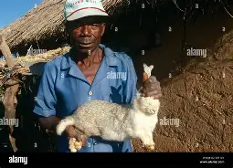

Our Products
Fresh Cabbages
Organic, locally grown cabbages.

Healthy Rabbits
Breeding rabbits raised with care.
Trojan farm is dedicated to reliable agriculture and animal husbandry practices that promote health, productivity, and environmental stewardship.

Trojan Farm is a family-owned business that has been operating for over 20 years. We are passionate about providing high-quality produce and livestock to our customers while maintaining sustainable farming practices. Our farm is located in the heart of the countryside, where we cultivate a variety of crops and raise healthy animals with care and dedication.
Organic, locally grown cabbages.
Breeding rabbits raised with care.
Email : info@trojanfarm.com | Phone : +254 712233487
Location: Egesusu Nyamira County